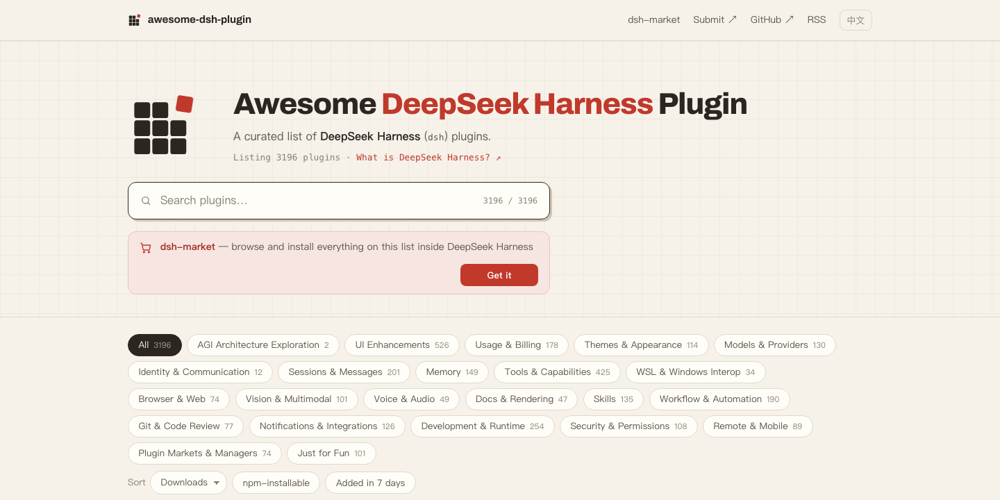
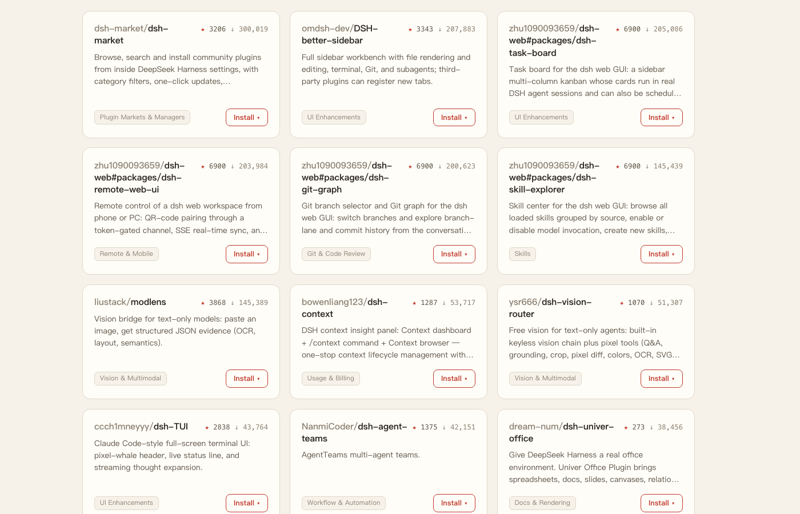
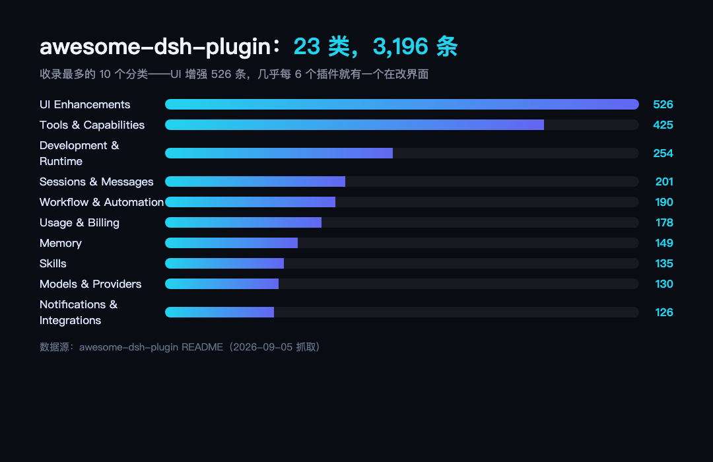

前面 11 期拆的都是单个插件，这一篇拆"货架"本身——awesome-dsh-plugin，14,628 star，比 better-sidebar、dsh-web、dsh-TUI 三家加起来还多，在整个 dsh 生态里仅次于 harness 本体。它不是一个插件，是全生态的插件总目录：3,196 条收录、23 个分类，每条都评审过源码，昨天还在更新（最近一次 push 是前天）。dsh-market 装插件时的安全白名单，源头就是这份清单。你装的每一个插件，几乎都能在这份清单里找到它的那一行；反过来，能进清单的插件，都过了同一道读源码的评审。
先对号入座，看你怎么挑插件。
场景一：搜索不可用。 想找个"定时任务"插件，GitHub 搜 "dsh"——出来 Dshell（网络取证框架）、DsHidMini（索尼手柄驱动）、DSharpPlus（.NET 的 Discord 库），同名前缀的世界里全是撞车的，翻三页还没有一个和 dsh 有关。这三个都是真实存在的高星项目，纯名字撞车。
场景二：装了心里没底。 找到个星数不错的插件，装不装？有没有人踩过坑？作者的回复速度快吗？出问题是自己配置错还是插件本身烂？——这些答案不在 README 里，在讨论区里。
场景三：跟不上生态。 插件每天冒出来，靠刷 GitHub Trending 追，追不过来；更麻烦的是分不清哪个是新陈代谢的新芽，哪个是三天热度的杂草。
这三个场景，awesome-dsh-plugin 就是答案：它把"发现插件"从搜索问题变成了浏览问题，并且给每一次浏览配好了排序、截图、评论和安装命令。这篇是系列的第一个非插件选题——生态导览特辑，把它讲透，顺便给前面 11 期画一张全景图：你走过的每一站，在这张图上都有一行坐标。
● ● ●
姿势一：目录站。 awesome-dsh-plugin.com，首页就是搜索框和 23 个分类标签——UI 增强（526 条）、工具能力（425）、开发运行时（254）、会话消息（201）、工作流自动化（190）……三种排序各有用处：装机量看真用、npm 可安装性看装得上吗、7 天新增看生态脉搏。
姿势二：README 本尊。 3,386 行的 Markdown，23 个分类小节，每条收录一行：仓库、一句话说明、分类归属，没有广告位也没有推广位。适合让 agent 整体读——把它扔给 dsh 当上下文，让 agent 按需求帮你挑，比人肉翻快一个量级。
姿势三：让 agent 自己查。 前两种是人逛目录，这一种是让目录来找你。 同一个作者还出了 dsh-find-plugin（119 star，装机量 23,000+），装上之后直接在会话里说"帮我找个能操作 Notion 的插件"，agent 搜索这份精选清单并给出即用安装命令，不离开会话。它也是星数最低、装机量惊人的又一位活例子，排序玄机的活例子。
三种姿势指向同一份数据。而它的权威性来自一处：dsh-market 的安装白名单就挂在这份清单上——不在列表内的来源，市场一律拒绝安装；目录站首页的横幅也直说"这份清单里的所有东西都能在 DeepSeek Harness 里浏览和安装"。目录即安检口，安检口即分发渠道，两者互为因果。
● ● ●
先看排序的玄机。 目录站默认按装机量（Downloads）排序，头部是 dsh-market（38 万次下载）、better-sidebar（28.7 万）、dsh-web 的任务看板（26.5 万）、modlens（14.5 万）——下载量和 star 数经常背离：dsh-find-plugin 只有 119 star 却有 2.3 万次下载，星数代表围观，下载代表真用。另一个反例是 vision-router，1,079 star 说明大家都在关注"给纯文本模型配视觉"这个方向还没被一篇长文拆过。挑插件时下载量比 star 诚实。
再看分类的分布。 收录最多的十个分类里，UI 增强 526 条一骑绝尘——几乎每 6 个插件就有一个在改界面（生态最早熟的方向，也最拥挤）；工具能力 425 条是给 agent 加功能的；开发运行时 254 条是给插件作者用的；相反，AGI 架构探索只有 2 条、身份通信 12 条——冷门分类反而是蓝海。想找"改体验"的去 UI 分类，想找"加能力"的去 Tools 分类，找错分类是挑不到的主要原因。
评论当验坑器。 每条收录的讨论区在本地市场、目录站、官网三处共用（GitHub Discussions 经 giscus）——一个插件只有一处对话，翻开就能看到前人踩过的坑和作者的回复速度；维护者答不答、答得多快，本身就是插件质量的一部分。
顺着清单摸排一圈，还能捞到几条 1,000 star 以上、前面十一期都没拆过的新面孔：dsh-anchored-standard（3,825 star，两阶段锚定预设的独立版，EP09 讲过的梁神模式同门）、dsh-im（1,136 star，把飞书/微信/钉钉/企业微信/QQ/Slack 六类 IM 机器人接进 dsh）、dsh-vision-router（1,079 star，又一个"给纯文本模型配眼睛"，和 EP06/EP08 的对照值得一做）。这些进候选池，后续按门槛往下排。
● ● ●
目录站首页——搜索框、分类标签、装机量排序都在首屏：

图：awesome-dsh-plugin 目录站首页（目录站实拍）
图：awesome-dsh-plugin 目录站首页（目录站实拍）
插件卡片——star、下载量、分类、一键安装命令俱全：

图：插件卡片网格，按装机量排序（目录站实拍）
图：插件卡片网格，按装机量排序（目录站实拍）
23 个分类的收录分布（收录最多的 10 类）：

图：23 类收录分布，收录最多的 10 个分类（数据卡）
图：23 类收录分布，收录最多的 10 个分类（数据卡）
三张图合起来读出一个生态的形状：头部插件吃掉了绝大部分装机量（前四名合计超过 100 万次下载），中部是大量的单点功能（每类几十到几百条），尾部每天都有新条目进（7 天新增筛选永远有货）。找插件的正确姿势是从分类切入、用装机量验证、拿讨论区兜底，而不是信搜索框——搜索框在这个生态里只会给你端上来网络取证框架和手柄驱动。
● ● ●
3,196 条的清单，最怕的不是没人投，是投多了审不动。它的做法值得所有生态清单抄：
评审是读源码的体力活。 贡献指南写得很直白：评审一个投稿意味着读插件源码，把描述里的每句话对着代码核一遍。一个带 127 条的 PR 不是一次投稿，是127 次投稿套了件外衣，诚实的结果是没有一条会被认真读完——所以一个 PR 最多 3 条。提交格式也由 CI 把关：README 是数据源生成的，手改的行活不过检查。
收插件，不收聚合包。 内容只有依赖清单的 all-in-one 包不单独收录——一行只指向别的行，对读者没有增量信息，还会让同一份工作在每个分类里被重复计数。dsh-web 那种聚合包自己提供设置界面、运行时协调各部分的，算插件，按普通标准审。这条规则给"全家桶"和"搬运工"划了一条清晰的线。
清单会自我清理。 定期扫描标记仓库消失、已归档、长期停更的条目，汇总到跟踪 issue，经确认后移除——目录类项目最常见的死法是"只进不出"，它把出也做成了流程；README 由数据源生成，本地重新生成本来就行，提交必须与数据源一致——手改的行活不过 CI。
诚实的安全边界。 评审会看源码里有没有混淆、凭据外传、异常的安装期行为，但 README 顶部大字声明：收录不等于做过安全审查，这只是常识性检查，不是审计。不夸大自己的保障，是清单能被信任的前提——这句话值得所有"精选/白名单"类项目抄在首页。
● ● ●
把这张全景图叠在前面的系列上，能看到几条有意思的线：EP01 拆的 dsh-context 属于"使用与计费"类，EP04/EP09 的两个工作台是"UI 增强"类的头部，EP06/EP08 两个视觉插件在"视觉与多模态"的 101 条里，EP07 hindsight 和 EP10 的 whale 彩蛋同属"记忆"类，EP11 的 dsh-market 是"插件市场与管理器"类（74 条）里星最高的。系列走到现在，23 个分类里已经踩过 8 个——剩下的高频分类（工具能力 425、工作流自动化 190、开发运行时 254）正好是后续选题的富矿——MemOS、iPolloWork 这些候选也都各有归属。
● ● ●
awesome-dsh-plugin 是 dsh 生态的地面运输系统：插件们在天上各飞各的，它负责让地面上的人找得到、看得懂、装得放心。14,628 star 说明一件事：当一个生态的插件多到需要索引时，索引本身就是基础设施。挑插件三步——装机量排序看真用、分类定位看对口、讨论区看坑；给它投稿的规矩也简单：读得动的源码、最多三条、别拿聚合包凑数。前面 11 期拆的每一篇，结尾那句"源码地址"的下一行，其实都可以加一句"它在清单里的分类是第 N 类"——这就是索引层的意义。
下一篇回到硬货：候选池里两条漏网大鱼二选一——MemOS（11,196 star，记忆操作系统，dsh 集成在主仓内，与 EP07 hindsight 正面对话）或 iPolloWork（5,338 star，设计/PPT/视频三插件套件）。到时拆。
源码地址：github.com/awesome-dsh-plugin/awesome-dsh-plugin（目录站：awesome-dsh-plugin.com）